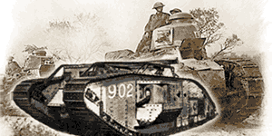
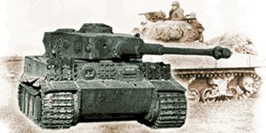
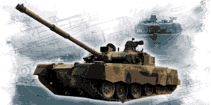

Enciklopedija Oklopa®: odredište za ljubitelje tenkova od 2024.
Enciklopedija tenkova je mjesto za učenje o povijesti oklopnih vozila, od njihovih ranih inspiracija i pionira do najnovijih glavnih borbenih tenkova. Naši pomno istraženi članci pokrivaju mnoge nacije i sva razdoblja razvoja oklopa, popraćeni prekrasnim i legendarnim ilustracijama. Pokrivamo širok raspon dizajna oklopnih vozila.
Pokrivamo četiri razdoblja:
Prvi svjetski rat – blato, bodljikava žica i rovovi: Velika Britanija i Francuska započele su razvoj tenkova kako bi se probile kroz neprijateljske linije. Međutim, mnogi su pioniri zamišljali korištenje oklopnih vozila u desetljećima prije Velikog rata. Ubrzo nakon predstavljanja, tenk je ubrzo postao stroj za ubijanje integriran u operacije kombiniranog naoružanja.
Drugi svjetski rat - U razdoblju između dva svjetska rata tenk je išao na svjetsku turneju, od Bolivije do Kine, svaki kutak svijeta i svih sedam kontinenata osjetilo je gaženje teškog oklopa. Unatoč tome, mnogi nisu bili uvjereni u ovo novo ratno oružje. Drugi svjetski rat promijenio bi te percepcije i vidio tenkove koji se koriste u neviđenom broju na svim ratnim scenama.
Hladni rat – Istok protiv Zapada: U razdoblju kojim je dominiralo nuklearno oružje, dvije suprotstavljene supersile dovele su do podjele svijeta na Istok i Zapad. Iako SAD i SSSR nikada nisu međusobno ratovali izravno, gotovo svi ratovi tog razdoblja vidjeli su široku upotrebu njihovih tenkova.
Moderna era – Jesu li tenkovi još uvijek relevantni?: Unatoč brojnim prorocima koji najavljuju propast tenkova, tenkovi su još uvijek važan dio svih svjetskih vojski. Moderno bojište ne pokazuje znakove da će se to uskoro promijeniti, s razvojem tenkova koji se nastavlja prilagođavati tome.
